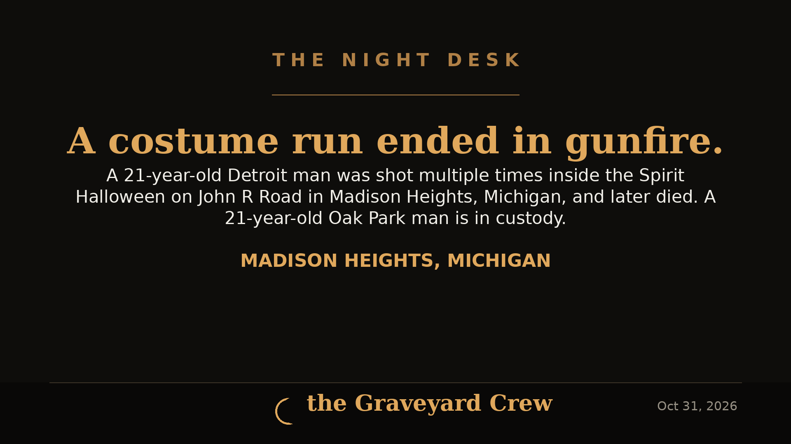

October 31, 2026
Man, 21, shot dead inside Madison Heights Spirit Halloween after altercation — second fatal Spirit Halloween shooting that day

Headline card by The Night Desk
Man, 21, shot dead inside Madison Heights Spirit Halloween after altercation
A 21-year-old Detroit man is dead after a shooting inside the Spirit Halloween store on John R Road in Madison Heights, Michigan, on Friday, October 30, the Madison Heights Police Department said in a statement reported by the Detroit Free Press.
Police responded to the store just after 2 p.m. and determined the shooting followed a brief altercation between the victim and a 21-year-old Oak Park man. The victim had been shot multiple times and was transported to a local hospital, where he later died.
Police located the Oak Park man shortly afterward and recovered a 9mm handgun believed to have been used in the shooting. The suspect was assaulted by bystanders while being taken into custody and suffered non-life-threatening injuries; he was taken to a hospital and was expected to remain in police custody after release from medical care.
The suspect's family told the Free Press he was acting in self-defense. His wife, Alanna Benson, 21, said the couple and their three young children were leaving the store — costumes in hand for their son's fourth birthday party — when a man her husband knew approached them, and that her husband, a CPL holder, fired to protect his family. That account is the family's claim; it has not been adjudicated.
"Based on the evidence gathered thus far, investigators anticipate seeking criminal charges in this case," the department said, adding that detectives will submit the investigation to the Oakland County Prosecutor's Office for review and that all individuals are presumed innocent unless and until proven guilty. The store was closed for the rest of Friday.
Madison Heights police ask anyone who witnessed the incident or has video or other information to contact Detective Sergeant Kari Randolph at 248-837-2737.
The Madison Heights shooting happened hours before a second shooting at a Spirit Halloween store in Fairfield, California, left one person dead and six wounded — two fatal shootings at the same seasonal chain on the same day. The Night Desk covered the Fairfield shooting separately; police in the two states have not suggested any connection between them.
This article is based on the Detroit Free Press report of the Madison Heights Police Department statement, published October 30, 2026. The Night Desk will update it when the prosecutor's charging decision and the victim's name are released.
Source: Detroit Free Press — read the original report
← Back to latest stories